가장 빠른 표준 거리, 가장 긴 러닝, 가장 높은 상승 고도처럼 한 번의 러닝이 남긴 최고 기록을 모읍니다. 긴 세션 안의 빠른 5K나 10K 구간도 개인 기록 후보가 됩니다.
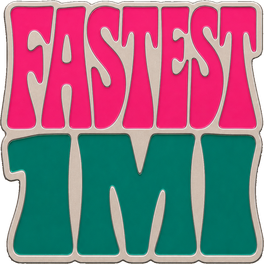
Fastest 1 Mile1마일 최고 기록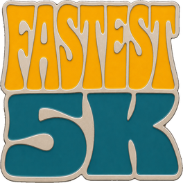
Fastest 5K5K 최고 기록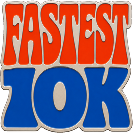
Fastest 10K10K 최고 기록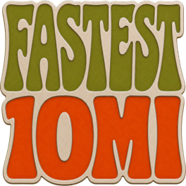
Fastest 10 Mile10마일 최고 기록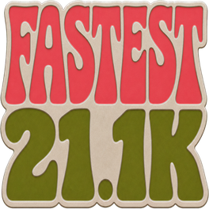
Fastest Half하프 최고 기록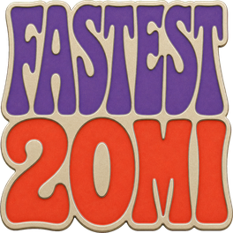
Fastest 20 Mile20마일 최고 기록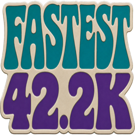
Fastest Full마라톤 최고 기록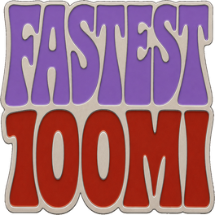
Fastest 100 Mile100마일 최고 기록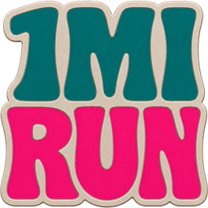
Finish 1 Mile1마일 완주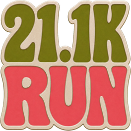
Finish Half하프 완주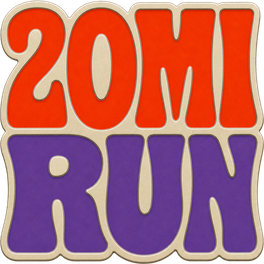
Finish 20 Mile20마일 완주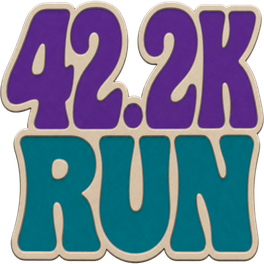
Finish Full마라톤 완주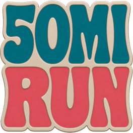
Finish 50 Mile50마일 완주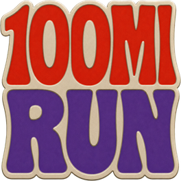
Finish 100 Mile100마일 완주특정 주나 월에 달성한 누적 거리는 기간 배지로 남습니다. 각 기간은 도달한 가장 높은 기준 하나로 기록됩니다.
하루, 주, 월, 년 단위로 가장 멀리 달린 기간을 별도 배지로 보여줍니다.
한 주 동안 달린 총거리가 25K부터 300K까지의 기준에 도달하면 배지로 기록됩니다.
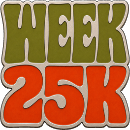
Week 25K주간 25 km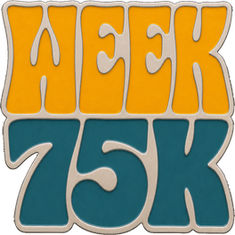
Week 75K주간 75 km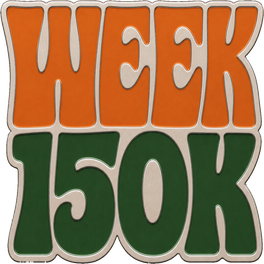
Week 150K주간 150 km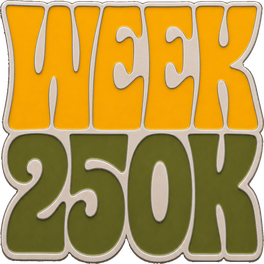
Week 250K주간 250 km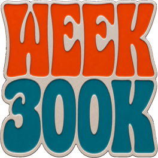
Week 300K주간 300 km한 달 동안 달린 총거리가 50K부터 1500K까지의 기준에 도달하면 배지로 기록됩니다.
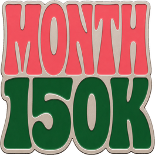
Month 150K월간 150 km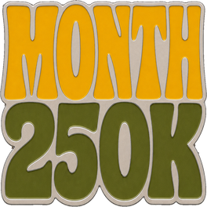
Month 250K월간 250 km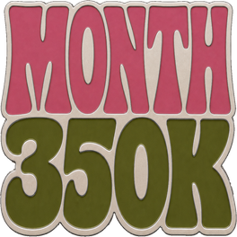
Month 350K월간 350 km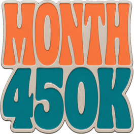
Month 450K월간 450 km거리 벨트는 누적 러닝 거리를 기준으로 정해집니다. 0 km에서 시작해 40,000 km까지, 현재까지 달린 총거리를 등급으로 표시합니다.
흰띠부터 검은띠까지는 각 띠 안에 4개의 stripe 단계가 있습니다. 검은띠 이후에는 20,000 km, 30,000 km, 40,000 km 기준만 표시합니다.